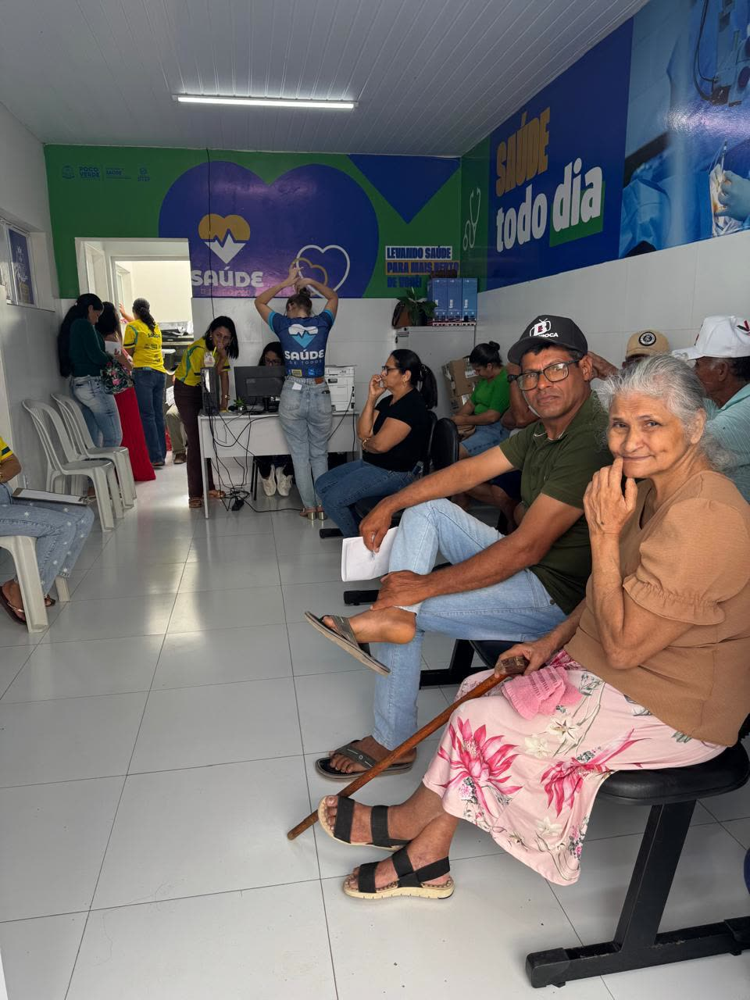
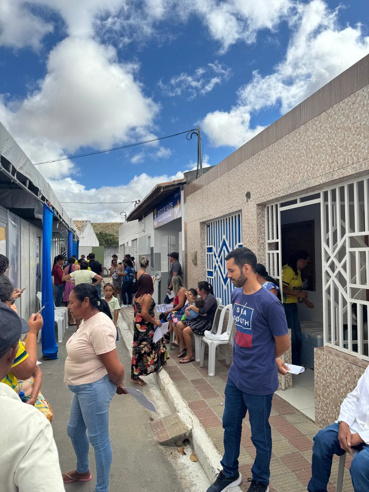
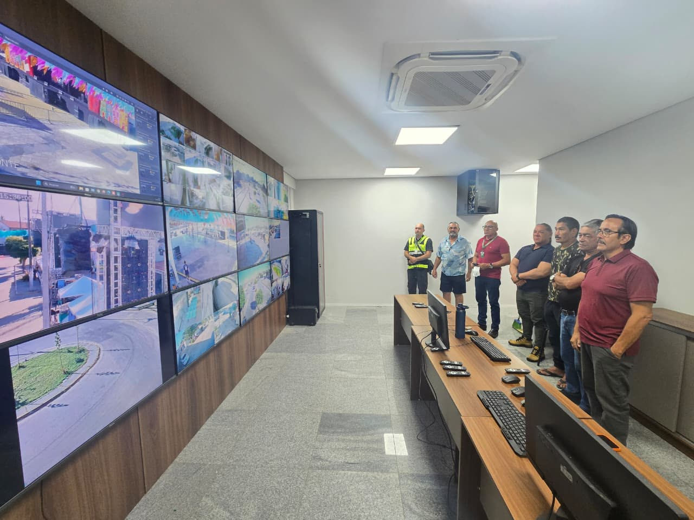
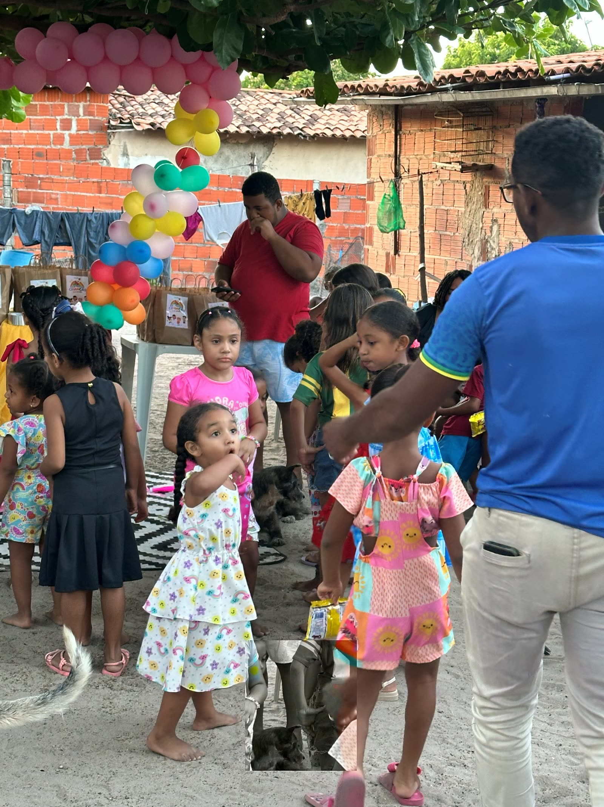
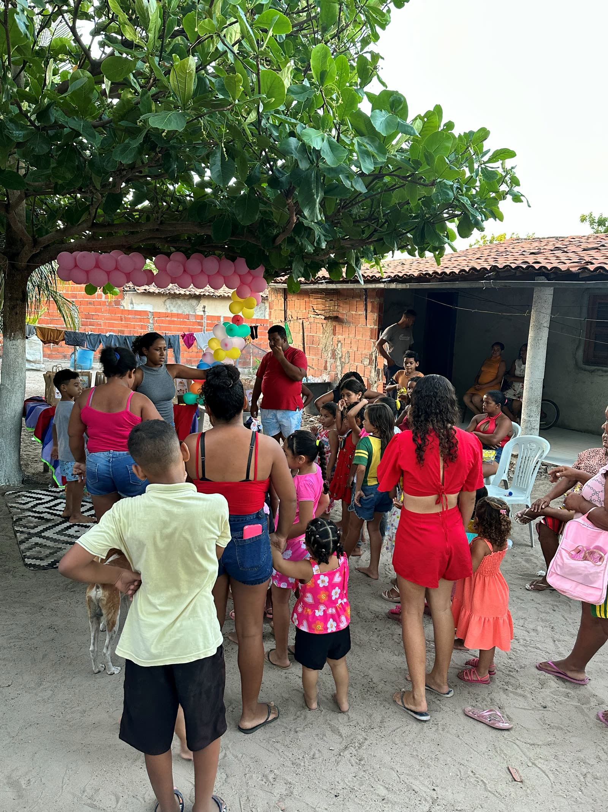

A palavra do presidente
Henrique Pereira conversa sobre o Projeto Apoiar e a missão de levar soluções à sociedade.
Assista agoraFazendo mais com você e por você.
Tecnologia, formação e cuidado para fortalecer a gestão pública e chegar a quem mais precisa.
Desde 2020, o Instituto STEF desenvolve soluções para fortalecer a gestão da saúde pública, integrando tecnologia, qualificação profissional, planejamento e apoio operacional.
Atuamos ao lado dos gestores públicos na construção de serviços mais eficientes, humanizados e sustentáveis, com foco na ampliação do acesso e na qualidade assistencial.
Conheça nossa atuação
Nossa atuação
Saúde, segurança e formação: três frentes que se conectam para melhorar a vida das pessoas e a gestão das cidades.
Saúde
Cuidado integral e humanizado, com foco na qualidade, na inovação e no impacto positivo nas comunidades. A jornada do cuidado conecta pessoas, equipes, processos e serviços.
Conhecer o Zera FilaSegurança
Tecnologia aplicada à prevenção, ao monitoramento e à melhoria da gestão pública, sempre para apoiar a atuação humana.
Conhecer o projetoFormação
Capacitar gestores e profissionais é a base de tudo. O Projeto Apoiar leva qualificação, apoio jurídico e contábil a instituições e a pessoas da própria região.
Saiba como funcionaZera Fila
Mutirões e redução de filas. Atendimentos organizados por cidade para ampliar o acesso, enfrentar a demanda reprimida e acolher cada pessoa com respeito.
- Mutirões de consultas especializadas
- Mutirões de exames laboratoriais e de imagem
- Mutirões cirúrgicos eletivos
Ação recente: Cedro, Ceará, com a ação “Saúde que Avança”.

Cidade Digital Inteligente 360
Estudo técnico do Instituto STEF (setembro de 2026) para uma plataforma municipal integrada. O objetivo não é só instalar câmeras: é capturar eventos, validar alertas, coordenar respostas e medir resultados.

- CampoCâmeras PTZ, fixas, leitores de placas (LPR) e sensores.
- TransporteFibra óptica, rede IP segregada e contingência por rádio.
- Centro de ComandoVideowall, gravação, mapas e operadores que validam e despacham ocorrências.
- InteligênciaLeitura de placas, fluxo de trânsito, regras de cena e alertas.
- GestãoIndicadores, auditoria, relatórios e integração entre órgãos.
Privacidade em primeiro lugar
Toda câmera precisa responder: por que existe, quem pode ver, por quanto tempo a imagem fica guardada e quem consultou.
- Perfis de acesso e registro de todas as consultas
- Nada de câmeras em áreas com expectativa de privacidade
- Reconhecimento facial não é item padrão: só com base legal, avaliação independente e validação humana
- Segurança cibernética, backups e conformidade com a LGPD
Implantação por etapas
- Mês 0 a 2: diagnósticoLevantamento de dados, riscos e inventário, projeto executivo e regras de governança.
- Mês 2 a 6: projeto pilotoLeitor de placas, câmeras em ponto de grande circulação, uma escola ou UBS e um Centro de Comando mínimo.
- Mês 5 a 12: expansãoRede de fibra, expansão das câmeras, unidades internas e integrações.
Vôlei
Esporte, saúde e convivência: o projeto de vôlei reúne atletas e comunidade em quadra.
Criança Contente
Para o Dia das Crianças, o Instituto STEF arrecada doces, pipocas, pirulitos e lembrancinhas e leva alegria para as crianças da comunidade.


A palavra do presidente
Henrique Pereira, presidente do Instituto STEF, conversa com Alana Sobreira sobre o Projeto Apoiar.
Duração: 8 min 51 s. Clique em um tema para ir direto ao trecho.
Apoiar em 3 passos
Primeiro capacitar as instituições; depois unir a tecnologia do Instituto à mão de obra que já existe.
- Capacitar e homologarAssociações, cooperativas e instituições públicas ou privadas recebem capacitação e apoio jurídico, contábil e documental.
- Projetos que fazem sentidoCada projeto é elaborado conforme a necessidade da localidade e de quem mora nela.
- Profissionais da regiãoPessoas capacitadas perto de casa: menos custo, menos deslocamento e uma economia local mais forte.
Nossos diferenciais
Fale com o Instituto STEF
Aberto ao diálogo com municípios, instituições, profissionais e comunidades.
Dionísio Torres, Fortaleza (CE)
CEP 60.135-215